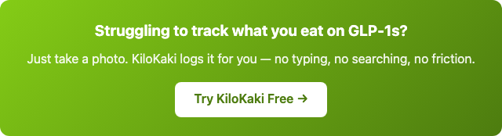

You're eating half of what you used to and the weight's coming off. It feels like a cheat code — and in a way, it is. GLP-1 medications turn down the volume on hunger so dramatically that a lot of people describe it as the first time in their life they've felt "normal" around food.
But there's a risk almost nobody warns you about in those first few weeks: when your appetite collapses, it's incredibly easy to under-eat protein for months without realizing it. And the thing you lose isn't just fat — it's muscle. Muscle you need for metabolism, mobility, and staying strong as the weight comes off.
Logging is how you catch that gap before it becomes a problem. Not to restrict. Not to count every calorie. To make sure the silence doesn't become neglect.
If you want the why behind the quiet — what food noise is and why it goes away — start with that article first. This one is the playbook: what to actually do with the silence.
What Changes When You're on a GLP-1
Before a GLP-1, food logging is usually about restriction: "Am I eating too much? Where am I going over?" You log to catch yourself before you overshoot.
After a GLP-1, logging flips to the opposite job entirely. You're not watching for excess — you're watching for deficit.
Three things change at once:
- Portions shrink. A plate of food that used to feel normal now feels like too much. You stop halfway through and you're done.
- Hunger cues get unreliable. The internal alarm that used to say "eat now" either goes quiet or fires at weird times. You might not feel hungry until 4pm — then forget to eat again until the next morning.
- You forget to eat. This is the one that surprises people. You genuinely don't think about lunch. Six hours pass. You realise you've had a coffee and half a banana since breakfast.
None of this is wrong. It's the medication doing exactly what it's supposed to do. But it creates a blind spot: you can go weeks eating far less than your body needs and not notice, because the feeling of "not enough" simply doesn't register anymore.
The 3 Things to Actually Watch
You don't need to log everything forever. But in the first few months on a GLP-1 — when your relationship with food is rewriting itself — there are three numbers worth keeping an eye on.
1. Protein — the muscle-preservation lever
This is the big one. When you're eating less overall, protein is the nutrient most likely to fall through the cracks. A chicken breast that used to be "the side" becomes the entire meal — and even that feels like too much.
General guidance (not medical advice — check with your prescriber): most adults on a GLP-1 benefit from aiming for roughly 1.2–1.6g of protein per kg of body weight per day. Some go higher if they're also strength training. For a 70kg person, that's 84–112g. On a reduced appetite, that's harder than it sounds.
Logging surfaces the gap fast. You might think you got enough protein today — until you look and realise you had eggs for breakfast (12g), a salad for lunch (8g), and rice with a bit of chicken for dinner (20g). That's 40g. Half of what you were aiming for. And it's not day one — it's been every day for three weeks.
You can't fix what you don't see. Logging makes it visible.
2. Your total intake floor
Under-eating for a few days isn't a crisis. Under-eating for weeks is a stall waiting to happen. Your metabolism adapts to scarcity — it always has, it always will — and the body doesn't distinguish between "I'm on a GLP-1" and "there's a famine." It conserves. The scale stops moving. You feel exhausted. And you blame the medication when often the real issue is that you've been running on 600 calories a day.
A food log catches the days you barely ate. Not to shame you — to remind you. A three-second photo of your plate, or a voice note saying "toast and tea, that's it," creates a record that you can look back on and say: "Oh. I haven't been eating much at all."
3. Patterns over willpower
After a week or two of logging, a pattern usually emerges. Maybe you only eat between 2pm and 7pm. Maybe your dinners are always carb-heavy because protein takes more effort to prepare. Maybe you snack at night not because you're hungry but because it's the only time food actually sounds good.
The point of logging isn't to judge those patterns. It's to see them. Once you see them, you can make small adjustments — like keeping a protein shake in the fridge for the days you don't want to cook, or logging a reminder to eat something before 1pm.
Data, not discipline. That's the shift.
How to Log When You Barely Want To
Here's the thing: the smaller your appetite, the less there is to log. If you're eating two small meals a day, logging takes maybe 20 seconds total. It's never been easier.
The key is removing friction. When you already don't want to eat, the last thing you need is a clunky app with a database search and a barcode scanner.
Photo logging. Snap your plate before you eat. That's it. One tap, one second. You don't need to weigh anything or look up ingredients. A photo is enough to build a record of what you ate and roughly how much. Over time, the photos tell the story your memory won't.
Voice logging. Dictate it: "Had a chicken rice plate, small portion, and a soy milk." Ten seconds. Done. No typing. No searching. Just speak and move on. This is especially useful on the days when even pulling up an app feels like too much effort — which, on a GLP-1, are some of the hardest days to remember to log.
Text logging. Type it out in a message, the way you'd tell a friend what you ate. "Eggs on toast, small apple at 3pm." If that's all you log today, that's a win. The goal isn't completeness. It's consistency.
The pitch is simple: the medication makes eating less involuntary. Logging makes sure what you do eat is enough. Three ways to do it, each taking less time than it took to read this paragraph.
What This Is Not
This article isn't telling you to eat when your doctor told you otherwise. It isn't anti-GLP-1. It isn't saying the medications are dangerous or that you should be worried. GLP-1s are transformative drugs that have helped millions of people reclaim their relationship with food.
What this is saying is: the medication handles the appetite part. The part about what and how much you eat — that's still on you. And a lightweight log, three times a day, ten seconds each, is the cheapest insurance policy you can buy against losing muscle, stalling out, or wondering why you feel so tired all the time.
Talk to your prescriber about your personal targets. Then use a log to make sure you're hitting them — without thinking about it.
